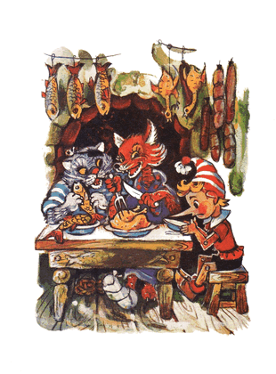
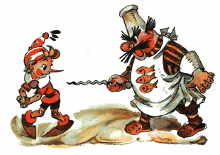

Kunci Emas, Atau Petualangan Buratino
| Judul asli | : Zolotoy Klyuchik, Ili Priklyucheniya Buratino |
|---|---|
| Pengarang | : Aleksey Nikolayevich Tolstoy |
| Penerbit asli | : Tsentral'nyy komitet VLKSM Izdatel'stvo detskoy literatury; Leningradskoye Otdeleniye; 1936 |
| Diterjemahkan oleh | : Heri Rudini |
Kata Pengantar
Ketika saya masih muda; dahulu sekali; saya pernah membaca sebuah buku: "Pinokio, atau Petualangan Boneka Kayu" (Boneka Kayu di dalam bahasa Itali: Buratino).
Saya sering menceritakan kepada sobat-sobat saya, para pemuda dan pemudi, petualangan seru si Buratino. Tapi semenjak buku itu hilang, saya pun menceritakannya seiring waktu semakin berbeda, dengan memasukkan macam-macam kisah, yang di dalam buku itu sama sekali tidak ada.
Sekarang, setelah bertahun-tahun lamanya, saya kembali teringat sobat lama saya 'Buratino' dan terpikir untuk menceritakannya pada kalian, muda mudi sekalian, kisah luar biasa tentang si manusia kayu.
-Aleksey Tolstoy-Seniman kayu bernama Josepi mendapati di tangannya sebatang kayu, yang memekik layaknya suara manusia.
Dahulu kala, di sebuah kota di pesisir laut Mediterania hidup seorang seniman kayu tua bernama Josepi, dia dijuluki si Hidung Merah.
Pada suatu hari dia mendapati di tangannya sebatang kayu, kayu gelondongan yang biasa dipakai untuk bahan bakar perapian di musim dingin.
- Lumayan nih, /Josepi berkata pada dirinya sendiri/ mending dibikinkan sesuatu saja, kaki-kaki meja misalnya...
Josepi mengenakan kacamatanya, yang dililit benang /sebagaimana kacamata itu sudah usang/, dia pegangi kayu gelondongan itu dan mulai mengupasnya dengan kampak.

Tapi ketika dia sedang mengupas, tiba-tiba terdengar suara yang memekik tipis:
- Oy oy, tolong pelan-pelan!
Josepi menurunkan kacamatanya ke ujung hidung lalu memeriksa sekeliling bengkel-kayu itu. Tidak ada siapa pun...
Dia membungkuk ke kolong meja. Tidak ada siapa pun...
Dia melihat ke dalam keranjang serpihan kayu. Tidak ada siapa pun...
Melongok ke ambang pintu. Tidak ada siapa pun di luar...
- "Masa iya aku melamun?" /pikir Josepi/ "Siapa yang barusan memekik?"
Sekali lagi dia ambil kampaknya, dan sekali lagi, begitu menancap ke kayu itu...
- Aduh, linu, apa kubilang! /suara tipis itu merintih/
Kali ini Josepi kaget bukan main, kacamatanya sampai berkeringat... Dia memeriksa setiap sudut ruangan, bahkan dia merangkak masuk ke perapian, mendongakkan kepalanya, cukup lama mengamati ke dalam cerobong.
- Tidak, tidak ada siapa pun.
- "Apa mungkin, aku meminum sesuatu yang tidak lazim sehingga telingaku berdering?" /Josepi bertanya-tanya pada dirinya sendiri/
Tidak, hari ini dia tidak meminum apa pun yang tidak lazim... Rileks sejenak, Josepi mengambil sugu, dia ketok-ketok bagian belakang sugu itu dengan palu, untuk mengatur supaya tidak terlalu banyak dan tidak terlalu sedikit pisaunya mencuat, dia baringkan kayu itu di meja dan mulailah dia serut...
- Oy, oy, oy, hati-hati, apa yang kau serut? /suara tipis itu merintih kesal/
Josepi melepaskan sugunya, mundur, mundur dan seketika terjungkal ke lantai: Sekarang dia mengerti, suara tipis itu berasal dari kayu itu.
Josepi memberikan kayu-berbicara itu kepada temannya, Carlo
Waktu itu Josepi dikunjungi sobatnya, pengamen organ bernama Carlo.
Carlo yang dulu, mengenakan topi bundar lebar, sendiri berjalan kaki mendorong-dorong organ putar-nya, dari kota ke kota sambil bernyanyi dan memainkan musik, demi sesuap roti.
Sekarang Carlo sudah tua dan sakit-sakitan, dan organ putarnya sudah lama mogok.
- Halo Josepi /masuk ke dalam bengkel lalu bertanya/ Ngapain duduk di lantai?
- Ah aku... Seperti yang kau lihat, aku kehilangan sekrup kecil... Nah ini dia! /jawab Josepi sambil melirik ke arah kayu/ bagaimanakah kehidupanmu sekarang, orang tua?
- Buruk, /Jawab Carlo/ aku masih berpikir; apa yang harus kukerjakan untuk memperoleh sesuap roti... barangkali kau bisa membantuku, memberi saran apa gitu...
- Gampang sekali /Josepi menjawab dengan gembira dan berkata di benaknya: "Akan kusingkirkan kayu sialan ini sekarang"/ Gampang sekali: lihatlah, terbaring di atas meja sebatang kayu istimewa, ambillah kayu itu, Carlo, bawa dia pulang...
- Ehhh... /jawab Carlo dengan ragu/ Lalu apa selanjutnya? kubawa kayu itu pulang, tapi di pondokku tidak ada perapian.
- Aku belum selesai bicara padamu, Carlo... Ambil sebilah pisau, buatlah sebuah boneka dari kayu itu, ajarkan dia berbicara dengan kata-kata lucu, berdendang dan bergoyang, mainkan dia kota ke kota, hasilkan sekepal roti dan segelas anggur.
Kemudian dari arah meja, di mana kayu itu terbaring, suara itu memekik dengan gembira:
- Bravo, ide cemerlang, Hidung Merah!
Josepi lagi-lagi tercengang ketakutan, sedangkan si Carlo hanya celangak-celinguk keheranan; "suara dari mana itu?"
- Kalau begitu, terimakasih, Josepi, atas saranmu. Ayo mari, kayunya.

Lantas Josepi meraih kayu itu dan buru-buru menyodorkan pada sobatnya. Tapi, entah karena dia menyodorkan dengan ceroboh, entah kayu itu loncat sendiri dan menggetok kepala Carlo.
- Oh jadi begini hadiahmu! /bentak Carlo tersinggung/
- Maaf, sobat, itu bukan aku yang menggetokmu.
- Terus aku sendiri yang menggetok kepalaku?
- Tidak, sobat, itu pasti, kayu itu sendiri yang menggetokmu.
- Omong kosong, kau yang menggetok...
- Tidak, bukan aku...
- Aku sudah tahu, kau ini pemabuk, Hidung Merah, /kata Carlo/ dan ternyata kau juga pembohong.
- Eh kau, sumpah ya! /bentak Josepi/ kemari kau!
- Kau sendiri yang kemari! Biar kujewer hidungmu!..
Kedua orang tua itu bercekcok dan mulai saling menerkam satu sama lain. Carlo memplintir hidung merah Josepi, dan Josepi menjambak rambut putih Carlo, yang tumbuh di sekitar kuping.
Selanjutnya mereka mulai heboh saling menerjang pinggang satu sama lain. Suara melengking dari arah meja tadi kali ini bersorak menyemangati:
- Hajar, hajar yang betul!
Pada akhirnya dua orang tua itu lelah dan kehabisan nafas. Josepi berkata:
- Sudahlah damai saja...
Carlo menjawab:
- Iya deh damai saja...
Dua orang tua itu berciuman. Carlo menjinjing kayu itu di ketiaknya dan pulang.
Carlo membuat sebuah boneka kayu dan menamainya Buratino
Carlo tinggal di sebuah pondok di kolong tangga, tempat di mana dia tidak punya apa pun di sana, selain perapian yang cantik; di dinding menghadap pintu.
Tapi perapian yang cantik itu, dan api di dalam perapian itu, dan ketel, yang mendidih di atas api, ternyata tidaklah nyata; hanya terlukis pada selembar kanvas usang.
Carlo masuk kedalam pondok, duduk di kursi satu-satunya menghadap meja tanpa kaki, dia letakkan kayu itu begitu dan begini, dan mulailah dengan pisau dia raut kayu itu membuat sebuah boneka.
- "Bagaimana aku menamainya?" /Carlo berpikir/ Akan kunamai dia Buratino. Nama itu akan mendatangkan kebahagiaan padaku. Setahuku ada satu keluarga, semuanya bernama Buratino: ayahnya Buratino, ibunya Buratino, anak-anaknya pun Buratino... Mereka semua hidup ceria dan bahagia.
Langkah pertama dia raut kayu itu menjadi rambut, lalu kening, lalu sepasang mata...
Tiba-tiba sepasang mata itu dengan sendirinya terbuka dan menatapnya...
Carlo tampaknya tidak ada tanda-tanda kalau dia kaget, malah dia bertanya dengan lembut.
- Sepasang mata kayu, kenapa kalian menatap sinis begitu padaku?
Tapi boneka itu hanya diam; tentu saja, karena dia belum punya mulut. Carlopun membentuk pipi, kemudian membentuk hidung; sederhana saja...
Tiba-tiba hidung itu dengan sendirinya meregang, tumbuh, dan berubah menjadi hidung panjang nan runcing, Carlo sampai mendengus:
- Tidak baik, panjang...
Lantas dia potong bagian ujung hidung itu. Tidak seberapa!
Hidung itu menggeliat, berputar-putar, dan kembali seperti semula; batang panjang hidung runcing penasaran.
Carlo lanjut ke bagian mulut. Tapi begitu selesai dia mengukir sebuah bibir; mulut itu langsung terbuka:
- Hi-hi-hi, Ha-ha-ha!

Kemudian nyosor-nyosor, mengusili, menjulurkan lidah merahnya yang tipis.
Carlo, tanpa menghiraukan tingkah-tingkahnya itu lanjut saja mengukir, memotong dan meraut. Membuatkan boneka itu dagu, leher, bahu, badan, lengan...
Akan tetapi, belum tuntas dia mengukir jemari yang terakhir, Buratino mulai menjamah kepala Carlo yang sulah, menggetok dan mengelitik.
- Dengar, /kata Carlo dengan tegas/ belum tuntas aku mengukirmu, tapi kau sudah mulai bertingkah... apalagi selanjutnya... hah?
Lalu dia menatap tegas pada Buratino, sedangkan mata Buratino yang bulat, menatap papa Carlo seperti mata tikus.
Carlo membuatkannya kaki yang panjang lentik dengan telapak kaki yang lebar. Di akhir pekerjaan, dia turunkan anak kayu itu ke lantai, untuk diajarkan berjalan.

Buratino bergoncang-goncang berdiri di atas kedua kakinya yang kurus, selangkah pertama, selangkah lagi, melompat, melompat lurus ke pintu, melewati ambang pintu dan terus ke jalan.
Carlo panik dan mengejarnya:
- Hei, nakal, kembali sini!..
Arah ke mana Buratino terbirit-birit di sepanjang jalan, seperti seekor terwelu, dengan hanya beralaskan telapak kaki kayu, dia "taki-tuk, taki-tuk" menutuk-nutuk jalan batu...
- Cegat dia! /sahut Carlo/
Para pejalan kaki tertawa-tawa, menunjuk-nunjuk ke arah Buratino yang kabur. Di persimpangan jalan berdiri seorang polisi bongsor berkumis baplang dan mengenakan topi segitiga.
Melihat ada manusia kayu kabur, dia lebarkan kedua kakinya, menutup jalan. Buratino hendak menerobos celah antara dua kakinya, namun polisi itu segera menerkam batang hidungnya dan memeganginya, hingga papa Carlo tiba...
- Heh, tunggu kau ya, kita belum selesai /kata Carlo terengah-engah dan hendak menyelipkan Buratino kedalam saku jaket/
Buratino sungguh tidak rela, di hari yang indah ini, di depan orang banyak, berakhir dengan kaki terperangkap di dalam saku jaket; lantas dengan cekatan dia berbalik, menjatuhkan diri ke jalan batu dan pura-pura mati...
- Ay, ay, /polisi itu berkata/ hal ini tampaknya tidak baik!
Para pejalan kaki mulai berkerumun. Melihat Buratino yang tergeletak, mereka menggeleng-gelengkan kepala.
- Malang sekali... /gaduh mereka/ Pasti karena kelaparan...
- Carlo membantingnya sampai mati! /seseorang bergaduh/ si pengamen tua ini hanya pura-pura jadi orang baik, dia kejam, dia orang jahat!
Mendengar itu semua, polisi berkumis menarik kerah si Carlo yang sial dan menyeretnya ke kantor polisi.
Carlo terseok-seok dan mengerang dengan keras:
- Oh, oh... sudah nasibku membuat anak dari kayu!
Ketika jalanan sepi, Buratino mengangkat batang hidungnya, melihat sekeliling, kemudian berlari sambil melompat-lompat, pulang ke rumah...
Si Jangkrik-Berbicara memberi Buratino nasihat bijak
Memasuki pondok di kolong tangga, Buratino berhambur ke lantai, bersandar ke kaki kursi.
- Selanjutnya apa lagi ya?
Jangan lupa, Buratino baru menjalani hari pertama setelah kelahirannya. Pikiran dia masih polos-polosnya, masih pendek-pendeknya, masih cetek-ceteknya.
Kemudian terdengar sesuatu:
- Krik-krik, krik-krik, krik-krik
Buratino memutar kepala, mengamati sekeliling pondok.
- Hei, ada siapa di sini?
- Di sini ada aku, krik-krik...
Buratino melihat sesosok makhluk, agak mirip kecoa, tapi kepalanya seperti belalang. Ia hinggap di dinding di atas perapian dan mengerik pelan "krik-krik", menatap cembung, seperti dari kaca, sepasang mata bianglala, menggerak-gerakkan antenanya.
- Hei, kau ini siapa?
- Aku, si Jangkrik-Berbicara, /jawab makhluk itu/ telah menghuni ruangan ini lebih dari seratus tahun
- Di sini aku tuannya, enyah kau cepat.
- Baik, aku akan pergi, meskipun sedih rasanya harus meninggalkan ruangan, yang sudah kuhuni seratus tahun lamanya /jawab jangkrik itu/ Tapi, sebelum aku beranjak pergi, dengarkanlah nasihat berhargaku ini.
- Betaaaapa aku butuh nasihat seekor jangkrik kuno...
- Ah, Buratino... Buratino, /si Jangkrik mulai berkata/ Berhenti nakal, patuhi Carlo, jangan kabur dari rumah tanpa sebab dan mulai besok pergilah sekolah. Itulah nasihatku. Kalau tidak, maka bahaya mengerikan dan petualangan menakutkan menantimu. Jika aku jadi kau, aku tidak akan membiarkan hidupku berakhir sia-sia bagaikan lalat kering.
- Kekekekenapa? /tanya Buratino/
- Kau akan lihat sendiri 'Ke ke ke kenapa' itu, /jawab si Jangkrik-Berbicara/
- Ah kau, dasar hama kecoa purba! /teriak Buratino/ lebih dari semua yang ada di dunia ini, aku menyukai petualangan menakutkan. Besok dini hari menjelang pagi aku akan kabur dari rumah; memanjat pagar, mengacak-acak sarang burung, mengusili anak lain, menjambret ekor anjing dan kucing... dan masih banyak lagi nanti!..
- Kasihan sekali aku padamu, kasihan sekali, Buratino, kau akan berlinang ari mata pahit.
- Kekekekenapa? /tanya lagi Buratino/
- Oleh karena, kepala kayumu yang bodoh itu.
Lantas Buratino melompat ke kursi, dari kursi ke meja, meraih palu dan melemparkannya ke atas kepala si Jangkrik-Berbicara.
Jangkrik cerdas tua itu mendesau berat, kumisnya berkedut-kedut lalu merayap ke belakang perapian; pergi dari ruangan itu untuk selama-lamanya.
Buratino terancam mati karena ulah dia sendiri
Papa Carlo membuatkannya pakaian dari kertas warna dan membelikannya buku-ABC
Setelah kejadian dengan si Jangkrik-Berbicara, pondok di kolong tangga menjadi sangat sepi. Hari semakin berlalu, dan perut Buratino juga mulai sepi.
Matanya terpejam dan tiba-tiba terlihat ayam goreng di atas piring.
Melek terbangun; ayam goreng di atas piring menghilang.
Terpejam lagi; terlihat di atas piring, separuh puding semolina separuh selai arben.
Melek lagi; tidak ada puding semolina separuh selai arben di atas piring. Dari situ Buratino mengerti, bahwa dirinya sangat lapar.
Dia bergegas ke perapian dan menyodorkan hidungnya ke uap ketel yang mendidih di atas api, tapi batang hidung panjang Buratino malah mencoblos melubangi ketel itu, sebab, sebagaimana kita ketahui, baik perapian, dan api, dan asap, dan ketel, itu semua hanya dilukis oleh si miskin Carlo pada selembar kanvas usang.

Buratino menarik hidungnya lalu mengintip ke dalam lubang; dibalik kanvas yang menempel di dinding itu ada semacam pintu kecil, tapi di situ sudah dipenuhi jaring laba-laba, seolah tak pernah dibuka.
Buratino lanjut meraba-raba ke setiap pojokan; tidak ditemukan secuil pun kerak roti atau tulang ayam sisa-sisa kucing.
Ah, tidak ada apa pun, si Carlo miskin tidak punya persediaan apa pun untuk makan malam!
Tak sengaja dia melihat di dalam keranjang serpihan kayu ada sebutir telur ayam. Dia pungut, dia letakkan di ambang jendela lalu dengan ujung hidungnya "tuk-tuk" dia pecahkan cangkangnya.
Ada suara menciak-ciak dari dalam telur:
- Terimakasih, manusia kayu!
Dari pecahan cangkang telur itu keluar seekor pitik berekor beludru dan bermata lucu.
- Sampai jumpa! Mama Ayam sudah lama menungguku di halaman.
Lalu pitik itu melompat keluar dari jendela; itulah semua yang dia saksikan.
- Oy, oy... /Buratino merengek/ aku ingin makan!..
Hari pun telah berlalu, di dalam pondok remang-remang lembayung senja.
Buratino terduduk di samping lukisan perapian, dari lapar pelan-pelan cegukan.
Dia melihat; dari ujung kolong tangga, dari bawah lantai, muncul kepala gendut. Merayap naik, mengendus-endus dan keluarlah seekor hama berwarna abu-abu berkaki pendek.
Dengan santai ia berjalan menghampiri keranjang serpihan kayu, selap-selip masuk, mengendus dan mengorek-orek; lalu dengan jengkel ia ubek-ubek serpihan kayu itu. Rupanya ia sedang mencari telur, yang sudah dipecahkan Buratino.
Lantas ia keluar dari keranjang itu dan menghampiri Buratino. Ia mengendus-endusnya, menyosor-nyosorkan hidung hitam dengan empat helai kumis panjang di kedua sisinya. Dari tubuh Buratino tidak tercium aroma makanan; lantas ia pun berlalu, pergi menggusur ekor tipisnya yang panjang.
Sebagaimana dia belum pernah menjambret ekor, Buratino menjambretnya saat itu juga!
Ternyata itu adalah si tikus got besar tua galak Susyara.
Dengan takut ia, bagaikan bayangan, melesat ke ujung kolong tangga, Buratino sampai terseret-seret. Tapi ketika ia melihat, bahwa ternyata itu hanya sekadar bocah kayu; ia pun dengan buas dan bengis berbalik menyerang, bermaksud untuk mencabik-cabik lehernya.
Kali ini Buratino yang ketakutan, dia lepaskan ekor tikus berdarah dingin itu dan melompat naik ke atas kursi. Si tikus mengejarnya.
Dari atas kursi dia melompat ke jendela. Si tikus mengejarnya.
Dari jendela dia terbang melintasi seisi pondok ke atas meja. Si tikus mengejarnya... lantas, di atas meja, ia sambar leher Buratino hingga tumbang, ia tarik dengan giginya, dijatuhkan ke lantai lalu ia seret ke ujung kolong tangga, menuju lubang bawah tanah.
- papa Carlo! /Buratino sempatkan berteriak/
- Aku di sini! /sahut suara tebal/
Pintu mengayun terbuka, masuk papa Carlo. Dia lepas sandal kayu dari kakinya lalu dia lemparkan ke si tikus.
Susyara melepaskan si bocah kayu, giginya mencicit dan kabur.
- Begini akibatnya kalau nakal! /tegur papa Carlo, mengangkat Buratino dari lantai. Memeriksanya, apakah masih utuh. Dia pangku di atas lutut, lalu mengeluarkan bawang bombay dari saku, dia kupas/
- Nih, makan!..
Buratino menancapkan gigi laparnya ke bawang itu dan memakannya, menggerus dan mengecap-ngecap. Setelahnya, dia gosok-gosokkan kepalanya ke pipi papa Carlo yang brewok.
- Aku akan menjadi anak pintar dan berbudi pekerti, papa Carlo... si Jangkrik-Berbicara menyuruhku pergi sekolah.
- Niat yang baik, nak...
- Papa Carlo, tapi ngomong-ngomong aku ini si kayu telanjang, anak-anak lain di sekolah akan menertawakanku.
- Hm... /kata Papa karlo sambil menggaruk dagunya yang kasar/ Kau benar, nak!
Dia menyalakan lampu teplok, menyiapkan gunting, lem dan beberapa lembar kertas warna. Dia menggunting dan mengelem, membuat jaket dari kertas cokelat dan celana pendek dari kertas hijau-cerah. Membuat sepatu dari kulit bekas sepatu bot dan topi kupluk dengan rumbai-rumbai dari kaus kaki bekas.
Terpasanglah semua pakaian itu pada Buratino.
- Berpakaianlah dengan bahagia!
- papa Carlo, /kata Buratino/ dan bagaimana juga aku pergi ke sekolah tanpa buku-ABC?
- Hm, kau betul, nak...
papa Carlo menggaruk-garuk kepala belakangnya. Dia sampirkan ke pundaknya jaket usang satu-satunya yang dia punya, lalu pergi ke luar.
Segera dia kembali, tapi tanpa jaket. Di tangannya dia memegang sebuah buku berisi huruf-huruf yang besar dan gambar-gambar yang menghibur.

- Nih buku-ABC-mu. Belajarlah dengan bahagia.
- papa Carlo, lalu jaketmu mana?
- Jaket itu aku jual... Tak apa, aku akan terbiasa dan... yang penting kau hidup bahagia...
Buratino mendekapkan hidungnya ke tangan dermawan papa Carlo
- Aku akan belajar, tumbuh dewasa, dan membelikan untukmu seribu jaket baru...
Buratino membulatkan niat, mulai dari malam pertama dalam hidupnya ini, akan berhenti nakal, seperti yang dikatakan si Jangkrik-Berbicara kepadanya.
Buratino menjual buku-ABCnya dan membeli tiket masuk teater boneka
Pagi-pagi sekali Buratino memasukkan buku-ABCnya ke dalam tas kecilnya dan berlari melompat-lompat menuju sekolah.
Di sepanjang perjalanan dia sama sekali tidak tergoda oleh jajanan-jajanan yang terpajang di depan toko; ada kue popi segitiga berlumuran madu, kue pai manis, dan gulali ayam jago, dicolok sebatang lidi.
Dia juga tidak tergoda melihat anak-anak yang sedang menerbangkan kertas ular (layang-layang, pen.)...
Seekor kucing Basillio belang menyeberang jalan, ekornya menggoda untuk dijambret. Tapi Buratino menahan diri dari hal semacam itu.
Semakin dekat dia menuju sekolah, semakin pula nyaring terdengar, dari arah pesisir laut Mediterania, berdendang musik irama gembira.
- Pip-pip-pip, /seruling bersiul-siul/- La-la-la-la, /biola beralun-alun/
- Zing-zing, /piringan tembaga berdesing-desing/
- Bum! /drum berdentum/
Ke sekolah harus belok kanan, suara musik terdengar di kiri. Buratino terhenti, kedua kakinya belok sendiri ke arah laut, ke tempat di mana:
- Pip-pip,piiiip...- Zing-la-zla, zing-la-zla
- Bum!
- Eh eh sekolah eh tidak eh tidak boleh pergi eh /Buratino lantas berteriak pada dirinya sendiri/ ah aku cuma mau lihat, dengar sekilas dan langsung bergegas ke sekolah!
Segenap jiwa dia melipir ke pesisir laut.
Dia melihat sebuah tenda berbahan kain linen, dihiasi bendera warna-warni, yang berkibaran diterpa angin laut.
Di atas tenda, berjoget empat musisi memainkan musik.
Di bawahnya, seorang tante bersenyum lebar menjual tiket.
Di depan pintu masuknya sekerumunan orang berbaris mengantri; pemuda pemudi, tentara, tukang es limun, suster basah dan susuannya, pemadam kebakaran, tukang pos; dan semua, mereka semua tengah membaca spanduk lebar:
"TEATER BONEKA""HANYA TAMPIL SATU KALI"
"Buruan!"
"Buruan!"
"Buruan!"
Buratino menarik-narik lengan baju seorang bocah yang berada di depannya:
- Kalau boleh tahu, berapa harga tiket masuknya?
Bocah itu menjawab dengan gigi terkatup, dengan santainya:
- Empat soldi, manusia kayu.
- Begini, kak, dompetku tertinggal di rumah, apa kakak tidak keberatan jika saya pinjam empat soldi?
Bocah itu bersiul mengejek:
- Ini dia bocah idiot!
- Aku ing ing ingin sekali menonton teater boneka! /Buratino berkata sambil berkaca-kaca/ Beli seharga empat soldi jaket kesayanganku...
- Jaket kertas harganya sempat soldi? Dasar idiot..
- Kalau begitu, kupluk lucu-ku ini saja...
- Hanya berudu yang suka dengan kuplukmu... Dasar idiot!
Bahkan hidung Buratino mulai pilek, dia ngotot ingin masuk teater.
- Kak, kalau begitu, ambil saja buku-ABC baruku ini seharga empat soldi.
- Ada gambarnya?
- Lengkap dengan gambar-gambar kekekekeren dan huruf-huruf besar
- Yasudah, sini, /kata bocah itu, dia ambil bukunya dan dengan tidak ikhlas dia hitung empat soldi/

Buratino berlari menuju tante bersenyum lebar tadi dan memekik:
- Permisi, Aku pesan tiket deretan pertama satu-satunya teater boneka yang hanya tampil satu kali.
Saat pementasan komedi berlangsung, para boneka melihat Buratino
Buratino duduk di deretan pertama, dengan senangnya mengamati tirai panggung yang masih menutup.
Di permukaan tirai itu tergambar orang-orang berjoget, ada gadis-gadis bertopeng hitam, ada manusia berjenggot menyeramkan mengenakan topi kerucut dihiasi bintang-bintang, ada matahari, yang mirip kue pancake bundar dengan hidung dan sepasang mata, dan gambar-gambar menghibur lainnya.
Tiga kali lonceng berdentang, lalu tirai itu naik.
Di kiri dan kanan panggung kecil itu berdiri pohon-pohon kardus. Di atas mereka tergantung sebuah lentera berbentuk rembulan, terpantul di atas selembar cermin, yang di permukaannya mengambang dua ekor angsa, yang terbuat dari kapas, dengan moncong-moncong berwarna emas.
Dari balik pohon kardus keluar seorang manusia kecil berkostum putih lengan panjang.
Wajah dia dilumuri bedak, putih, seperti pasta gigi bubuk.
Dia membungkuk pada para hadirin yang terhormat lalu berkata dengan sedih:
- Halo, nama saya Pierrot... pada kesempatan ini kami akan mementaskan di hadapan anda sebuah komedi yang berjudul "Gadis berambut biru, atau tiga puluh tiga toyor". Saya nanti akan digetok, ditabok dan ditoyor. Ini adalah komedi yang sangat humor...
Dari balik pohon kardus yang lain melompat keluar satu orang lagi, berkostum kotak-kotak, seperti papan catur. Dia membungkuk pada para hadirin yang terhormat.
- Halo, saya Harlequin!
Kemudian dia menghadap Pierrot dan melancarkan dua tamparan, begitu nyaring, sehingga bubuk putih berjatuhan dari pipinya.
- Kenapa kau murung, idiot?
- Saya sedih oleh, karena saya ingin menikah, /jawab Pierrot/
- Terus kenapa kau tidak menikah?
- Oleh karena pengantinku kabur dariku...
- Ha-ha-ha, /Harlequin tertawa berguling-guling/ lihat nih idiot!
Dia ambil tongkat lalu menggetok Pierrot.
- Siapa nama pengantinmu?
- Kau takkan menoyorkukah?
- Belum, baru juga mulai.
- Kalau begitu ia itu bernama Malavina, alias gadis berambut biru.
- Ha-ha-ha! /lagi-lagi Harlequin tertawa berguling-guling lalu menoyor Pierrot tiga kali/ Anda mendengarnya, para hadirin yang terhormat... memangnya ada gadis rambutnya biru?
Begitulah dia berkata, menghadap ke arah penonton, seketika terlihat di bangku paling depan, ada seorang manusia kayu, bibir ke telinga, hidung panjang, memakai kupluk dengan rumbai-rumbai.
- Lihat, itu Buratino! /seru Harlequin, menunjuk-nunjuk ke arahnya/
- Hidup Buratino! /sorak Pierrot, mengangkat dua lengan panjangnya/
Dari balik pohon-pohon kardus berhamburan para boneka; gadis-gadis bertopeng hitam, si seram berjenggot topi kerucut, boneka anjing bermata kancing, si bungkuk dengan batang hidungnya yang seperti mentimun...
Mereka semua berlarian ke arah lilin-lilin yang berjejeran di tepi panggung, dan, sambil melirik-lirik di bawah telapak tangan, mereka berseru-seru:
- Ini dia Buratino! Ini dia Buratino! Kemarilah, kemari bocah lucu nakal Buratino!
Lantas dari bangku penonton dia melompat ke kotak prompter (tempat seorang pemandu bersembunyi di bawah panggung di bagian depan dan memberikan arahan, pen.), kemudian ke panggung.

Boneka-boneka itu menariknya, lalu memeluk, mencium, dan mencubitnya... lantas boneka-boneka itu menyanyikan lagu "Burung Polka":
Burung polka menariDi halaman dini hari.
Hidung kekiri, ekor kekanan,-
Itulah polka Barabas.
Dua kumbang di atas drum,
Katak melompat dua dentum.
Hidung kekiri, ekor kekanan,-
Itulah polka barabas.
Burung polka menari,
Menyenangkan sekali.
Hidung kekiri, ekor kekanan,-
Begitulah kelakuan si polka
Para penonton terharu. Suster basah menyeka-nyeka. Pemadam kebakaran berderai air mata.
Hanya saja kakak-kakak di bangku deretan belakang menggerutu dan menghentak-hentak:
- Sudah cium-ciumnya! bukan anak kecil, lanjutkan saja pentasnya!
Mendengar semua kegaduhan itu, dari balik panggung nongol seorang pria, tampangnya sangat seram, seseorang bisa saja mematung ketakutan saat menatapnya.
Jenggot lebat tak diikatnya menjuntai sampai lantai, mata melotot berputar-putar, rahang lebar bergeriginya terkatup-katup, seolah itu bukan manusia, melainkan buaya. Di tangannya dia memegang cambuk tujuh cabang.
Ternyata itu adalah pemilik teater boneka, Doktor ilmuan boneka 'signor Karabas Barabas'.
- Ha-ha-ha, ho-ho-ho!! /dia meraung-raung pada Buratino/ Jadi kau yang menghambat pementasan komedi spektakuler-ku!

Dia angkat Buratino, dia bawa ke sanggar teater lalu digantung pada sebuah paku. Balik lagi, dia gebrak boneka-boneka itu dengan cambuk tujuh cabang, supaya mereka melanjutkan pentas.
Singkat cerita para boneka menuntaskan pentasnya, tirai ditutup, para penonton bubar.
Doktor ilmuan boneka 'signor Karabas Barabas' pergi ke dapur makan malam.
Dia masukkan ujung jenggotnya ke dalam saku, supaya tidak mengganggu, dia duduk di depan perapian, di mana pada sebuah garpu terpanggang seekor kelinci utuh dan dua ekor ayam.
Jarinya menekan-nekan, menyentuh panggangan, dia rasa masih mentah.
Di tungku perapian itu hanya ada sedikit kayu bakar. Lantas dia menepuk tangan tiga tepukan. Datang bergeruduk Harlequin dan Pierrot.
- Bawakan padaku Buratino nganggur itu /kata signor Karabas Barabas/ Dia terbuat dari kayu kering, biar kulempar dia ke perapian, pangganganku akan cepat matang.
Harlequin dan Pierrot jatuh berlutut, memohon untuk melepaskan Buratino yang malang.
- Mana cambukku? /bentak Karabas Barabas/
Lantas mereka, sesenggukan, pergi ke sanggar, menurunkan Buratino dari paku dan menyeretnya ke dapur.
Alih-alih membakar Buratino, signor Karabas Barabas memberinya lima koin emas dan membebaskannya pulang.

Ketika boneka-boneka itu menyeret Buratino dan menyungkurkannya ke lantai di dekat perapian, signor Karabas Barabas, yang sedang mengorek-orek arang dengan tongkat, terisak-isak buas.
Mendadak matanya memerah semerah darah, wajahnya mengkerut. Pasti ada serpihan arang tersedak di lubang hidungnya.
- Huh... huaash... aaash... /derau Karabas Barabas, matanya meletet/ Huaaasihh!!..
Dia bersin sampai-sampai abu mengepul keluar dari cerobong perapian.
Ketika Doktor ilmuan boneka mulai bersin-bersin, dia takkan bisa berhenti hingga lima puluh kali bersin, dan kadang seratus kali berturut-turut.
Karena bersinnya yang luar biasa, dia jadi lemas dan berubah menjadi lemah lembut.
Perriot diam-diam berbisik pada Buratino:
- Coba ajak dia bicara di sela-sela bersin
- Huaaaasih! Huaaaasih! /Karabas Barabas menyedot udara dengan mulutnya yang menganga lalu bersin menggelegar, kepalanya tersuntuk dan kakinya tersentak/
Berguncang seisi dapur, gelas piring bergerincing, panci katel terayun-ayun di atas paku.
Di sela-sela bersin, Buratino coba merengek dengan suara tipis menyedihkan:
- Sengsara aku, malang nasibku, tak ada seorangpun yang kasihan padaku!
- Jangan merengek! /bentak Karabas Barabas/ Kau membuatku pusing, Huaasihh!!
- Lekas sembuh, signor /kata Buratino tersengut-sengut/
- Terimakasih... jadi bagaimana orang tuamu, apa masih hidup? Huaasih!
- Aku sama sekali tidak, aku tidak pernah memiliki seorang ibu, signor... Ah, malangnya nasibku! /Buratino merengek begitu melengking, telinga Karabas Barabas berdenging serasa ditusuk jarum/
Karabas menghentakkan kakinya:
- Jangan merengek, sudah kubilang!.. Huaasihh! Lalu bagaimana bapakmu, apa masih hidup?
- Papaku yang miskin masih hidup, signor.
- Bisa kubayangkan, bagaimana jadinya ketika bapakmu tahu, bahwa aku memanggang seekor kelinci dan dua ekor ayam di atas tubuhmu... Huaasihh!
- Lagi pula papaku yang miskin akan segera mati oleh kelaparan dan kedinginan. Aku satu-satunya andalan dia di masa tua. Mohon, lepaskanlah aku, signor.
- Persepuluh ribu setan! /bentak Karabas Barabas/ Aku tidak berbicara soal belas kasihan. Kelinci dan ayam ini harus matang. Masuk ke perapian.
- Signor, hal itu mustahil bisa saya lakukan.
- Kenapa? /tanya Karabas Barabas, hanya untuk supaya Buratino terus berbicara, daripada memekik di telinga/
- Signor, saya pernah sekali mencoba menyodorkan hidung saya ke perapian tapi malah mencoblos berlubang.
- Tidak masuk akal! /Karabas Baraba kaget/ Bagaimana bisa kau mencoblos api dengan hidungmu sehingga berlubang?
- Sebab, signor, perapian dan ketel di atas api tersebut hanya terlukis pada selembar kanvas usang.
- Huaaaaaasihh! /bersin kali ini begitu dahsyat, sampai-sampai Pierrot terhempas ke kiri, Harlequin ke kanan, dan Buratino berputar-putar seperti gasing/
- Di mana kau melihat perapian yang api dan ketelnya, terlukis di selembar kanvas?
- Di pondok papa Carlo-ku, signor.
- Bapakmu si Carlo!? /Karabas Barabas terperanjat dari kursi, mengangkat kedua tangannya, jenggotnya mengkibas/ Kalau bagitu, artinya, di pondok si tua Carlolah rahasia itu berada...
Tapi di situ Karabas Barabas, tampaknya, hampir keceplosan mengungkapkan rahasia, kedua tangannya seketika membekap mulutnya. Kemudian dia terduduk sejenak, mata belonya menatap api yang sekarat.
- Baiklah, /akhirnya dia berbicara/ aku akan makan malam dengan kelinci setengah matang dan ayam mentah. Ku beri kau kesempatan hidup, Buratino. Tidak hanya itu... /dia merogoh saku jaket di sela jenggotnya, mengeluarkan lima koin emas dan menyerahkannya pada Buratino/ Tidak hanya itu... Ambil uang ini dan berikan pada si Carlo. Membungkuk dan katakan padanya bahwa, aku minta dia, usahakan jangan dulu mati kelaparan dan kedinginan, dan yang paling penting: kau jangan pergi dari pondok dia, yang ada perapiannya, yang terlukis di selembar kanvas usang. Sekarang kau pergi tidur yang nyenyak dan besok dini hari langusung pulang.
Buratino memasukkan lima koin emas itu ke sakunya dan menjawab dengan membungkuk hormat:
- Terimakasih banyak, signor. Anda tidak mempercayakan uang ini kepada tangan yang salah.
Harlequin dan Pierrot menuntun Buratino ke kamar tidur boneka, di mana boneka-boneka itu lagi-lagi memeluk, mencium, merangkul, mencubit, dan sekali lagi memeluk Buratino, yang tak sangka dapat lolos dari maut mengerikan di perapian.
Dia bisik-bisik pada boneka-boneka itu:
- Di sini ada sebuah rahasia.
Di perjalanan pulang Buratino berjumpa dengan dua pengemis; si kucing Basillio dan si rubah Alisa
Di pagi buta Buratino menghitung uangnya; koin emasnya banyak sekali, sebanyak jari-jemari di tangannya: lima.
Berkepal emas di tangan, dia berlari melompat-lompat pulang sambil bergumam:
- Belanja jaket baru buat papa Carlo, beli kue poppi segitiga yang banyak, gulali ayam jago dicolok sebatang lidi.
Setelah jauh dari tenda linen teater boneka dan bendera-benderanya yang berkibaran, dia melihat dua pengemis, begitu prihatin bergelandangan di jalan tanah: Si rubah betina Alisa, terpincang-pincang berjalan dengan tiga kakinya, dan si kucing buta Basilio.
Ini bukan kucing yang dilihat Buratino kemarin di jalan, tapi sama-sama Basilio dan juga belang-belang. Buratino hendak lewat begitu saja, tapi si rubah Alisa berkata dengan sangat manis:
- Halo Buratino yang ramah! Mau ke mana buru-buru begitu?
- Pulang, ke papa Carlo.
Alisa menghela nafas begitu anggun:
- Aku tidak tahu pasti, apakah kau akan menjumpai si Carlo malang dalam keadaan masih hidup atau tidak, kondisinya amat buruk, kelaparan dan kedinginan...
- Kau pernah lihat ini gak? /Buratino membuka kepalan tangannya, memamerkan lima keping emas/
Melihat uang itu, si rubah tanpa sadar menggapai-gapaikan cakarnya, dan si kucing buta mendadak membuka lebar kedua matanya, terpesona menyoroti uang itu, seperti dua lentera hijau.
Tapi Buratino sama sekali tidak menyadari hal itu.

- Buratino yang baik lagi dermawan, mau kau apakan uang-uang itu?
- Membeli jaket baru untuk papa Carlo... Membeli buku-ABC baru...
- buku-ABC? Oh,oh!.. /kata si rubah Alisa, menggeleng-gelengkan kepala/ belajar tidak akan mendatangkan kebahagiaan padamu. Dulu aku belajar dan terus belajar, lihatlah, sekarang aku berjalan dengan tiga kaki.
- Buku-ABC?! /gerutu si kucing Basillio, mendengus, kumisnya kecut/ Gara-gara belajar benda sialan itu mataku jadi picek...
Di atas dahan pohon kering di pinggir jalan itu bertengger seekor gagak betina tua. Ia menguping, mengamati lalu berkekek:
- Hoaks, hoaks!..
Si kucing Basillio seketika melompat tinggi, dengan cakarnya dia hempaskan si gagak dari dahan pohon, robek separuh ekornya; ia terbang kepayahan. Dan masih saja dia mengatakan bahwa dirinya buta.
- Kenapa kau begitu padanya, kucing Basillio? /tanya Buratino kaget/
- Mataku ini kan picek /jawab si kucing/ kukira, itu anjing di atas pohon...
Berjalanlah mereka bertiga di sepanjang jalan tanah, si rubah berkata:
- Buratino yang pintar dan bijaksana, maukah kamu, seandainya uangmu bertambah menjadi sepuluh kali lipat?
- Tentu saja, mau! Tapi bagaimana bisa?
- Gampang sekali, simpel, ikut kami saja.
- Kemana?
- Ke Negeri Idiot.
Buratino mempertimbangkan sejenak.
- Ah tidak, lain kali saja, sekarang aku harus lekas pulang.
- Oh ya silahkan, kami tidak mengekangmu, /kata si rubah/ kau sendiri yang rugi.
- Kau sendiri yang rugi. /gerutu si kucing/
- Kau adalah musuh bagi dirimu sendiri. /kata si rubah/
- Kau adalah musuh bagi dirimu sendiri. /gerutu si kucing/
- Padahal emas lima kepingmu dapat berubah menjadi uang bergepok-gepok...
Buratino terhenti, membuka mulutnya:
- Omong kosong!
Si rubah duduk di ekornya, menjilat bibir.
- Sekarang biar kujelaskan padamu. Di Negeri Idiot ada sebuah lapangan ajaib, namanya Lapang Keramat... Di lapangan itu kau gali sebuah lobang, lafalkan tiga kali: "kreks, feks, peks" masukkan koin emas ke lobang itu, timbun lagi dengan tanah, taburi garam diatasnya, siram-siram dan pergilah tidur. Keesokan paginya dari lobang itu akan tumbuh sebuah pohon kecil, alih-alih dedaunan, di atasnya akan bergelantungan koin-koin emas. Apa sudah jelas?
Buratino sampai melompat kaget:
- Omong kosong!!
- Ayo pergi, Basillio /memalingkan batang hidungnya dengan angkuh, si rubah berkata/ tak percaya pada kita, yasudah...
- Tidak, tidak, /Buratino memanggil/ percaya, aku percaya!.. Ayo kita pergi ke Negeri Idiot!..
Di kedai "Tiga Impun"
Buratino, si rubah Alisa dan si kucing Basilio menghilir turun gunung, berjalan dan terus berjalan; melintasi lapangan, perkebunan anggur, melintasi hutan pinus, lepas ke arah laut, balik lagi dari arah laut, melintasi hutan yang sama, perkebunan anggur...
Sampai di atas bukit, sebuah kota dan matahari di atasnya dapat terlihat, dari ujung kiri ke ujung kanan...
Si rubah Alisa berkata, terengah-engah:
- Ah, tidak segampang itu untuk masuk ke Negeri Idiot, semua telapak kaki terkikis habis...
Sore menjelang malam, mereka melihat di pinggir jalan ada sebuah rumah tua dengan atap-atap yang datar dan papan nama di atas pintu masuknya:
KEDAI "TIGA IMPUN"Sang master bergegas keluar menyambut para tamu, melepaskan topi panjang dari kepalanya yang botak lalu membungkuk rendah; mempersilahkan masuk.
- Tidak ada salahnya kalau kita sekadar mencicipi kerak kering, /kata si rubah/
- Sekadar kerak roti untuk traktiran. /sambung si kucing/
Memasuki kedai, duduk di dekat perapian, yang mana di pemanggangan dan penggorengan serba-serbi makanan telah tersaji.
Si rubah Alisa setiap menit menjilat bibir, si kucing Basilio meletakkan dua cakarnya di atas meja, moncong berkumisnya bertopang di atas cakar; menatap ke arah makanan.
- Hei, master, /kata Buratino, dengan nada yang tinggi/ beri kami tiga kerak roti...
Sang master nyaris terjungkal karena kaget, sebab tamu yang terhormat memesan sangat sedikit.
- Buratino yang cerdas dan humor ini bercanda dengan anda, master. /si rubah terkikik/
- Dia bercanda, /geram si kucing/
- Maksud dia, beri kami tiga kerak roti, disertai.. kambing guling yang montok itu.. /kata si rubah/ ditambah anak angsa, dan sepasang merpati, dipanggang, dan barangkali, ditambah ati ampela.
- Enam ekor ikan kerapu goreng yang paling gemuk, /pesan si kucing/ dan ikan mentah kecil untuk camilan
Singkat cerita, mereka mengambil semua makanan yang ada di perapian: untuk Buratino hanya tersisa sepotong kerak roti.
Si rubah Alisa dan si kucing Basillio melahap semua makanan beserta tulang-tulangnya.
Perut mereka bengkak, moncong belepotan.
- Kita istirahat satu jam, /kata si rubah/ tepat tengah malam kita pergi. Jangan lupa bangunkan kami, master...
Si rubah dan si kucing jatuh di atas dua kasur empuk, mendengkur dan bersiul. Buratino meringkuk di pojokan di atas karpet anjing. Memimpikan sebuah pohon berdaun emas bundar-bundar... Kedua tangannya menggapai-gapai...
- Hei, signor Buratino, sudah waktunya, sudah tengah malam...
Pintu diketuk. Buratino terperanjat, ngucek-ngucek mata. Di atas kasurnya si rubah maupun si kucing, sudah kosong.
Sang master menjelaskan:
- Teman-teman anda yang terhormat berkenan untuk bangun lebih awal, sarapan kue pai dingin lalu pergi...
- Tidak ada pesan untukku?
- Justru mereka mewanti-wanti, yaitu, signor Buratino, jangan telat satu menit pun, bergegas menyusuri sepanjang jalan melewati hutan...
Buratino pun bergegas ke arah pintu, tapi sang master mencegatnya di ambang pintu, memicingkan mata, tangan bertolak pinggang:
- Terus untuk makan malamnya siapa yang bayar?
- Oy, /pekik Buratino/ berapa?
- Tepat satu keping emas...
Buratino berniat untuk menerobos melewati dua kakinya, tapi sang master meraih tusukan daging. Kumis baplangnya, bahkan rambut di telinganya, berdiri tegak.
- Bayar, berengsek, atau kukoyak-koyak kau seperti kumbang!
Terpaksa harus menyerahkan satu dari lima keping emasnya. Dengan hidung terhisak-hisak lara, Buratino meninggalkan kedai terkutuk itu.
Malam begitu gelap, bisa dibilang pekat, seperti jelaga. Semua sudah tertidur pulas. Hanya ada seekor burung malam terbang diam-diam di atas kepala Buratino: 'Celepuk Gunung'.
Menempelkan sayap lembutnya di hidung, Celepuk itu mengulang-ulang:
- Jangan percaya, jangan percaya, jangan percaya
Dia terhenti dengan kesal.
- Apa maumu?
- Jangan percaya pada si kucing dan si rubah...
- Dan juga padamu!..
Dia terus melangkah semakin jauh dan terdengar, sayup-sayup Celepuk itu memekik dari belakang:
- Takut loh ada perampok di jalan ini...
Buratino dikejar perampok
Cahaya kehijau-hijauan tiba di batas cakrawala; sang rembulan telah naik.
Di depan mulai terlihat hutan hitam.
Buratino melangkah semakin cepat. Ada sosok di belakang dia, juga melangkah semakin cepat.
Dia anjak berlari. Sosok di belakang dia juga berlari, diam-diam membuntuti
Dia berbalik.
Dia berhadapan dengan dua sosok; di kepala mereka terpasang karung yang dilubangi untuk mata.
Sosok yang satu, dia pendek, mengacungkan pisau, yang satunya lagi, ia tinggi, mengangkat pistol, dengan laras yang melebar, seperti corong...
- Ay!, ay! /jerit Buratino dan, seperti terwelu, terbirit-birit ke arah hutan hitam/
- Stop, stop di situ! /teriak perampok-perampok itu/
Buratino setelah ketakutan setengah mati, baru dia mengerti; dia kulum empat keping emasnya ke mulut kemudian melipir dari jalan ke arah pagar, yang dirimbuni beri-beri hitam... Tapi di situ dua perampok itu berhasil menangkapnya...
- Nyawa atau Uang!?..
Buratino, yang seolah-olah tidak mengerti apa yang mereka inginkan darinya, hah-heh-hoh saja hidungnya ngos-ngosan. Perampok-perampok itu mencengkram kerahnya, yang satu menodongkan pistol, yang satunya lagi menggeledah saku.
- Mana uangmu? /geram si tinggi/
- Uang, sssssshialan! /desis si pendek/
- Kupisah-pisah kau!
- Kucopot kepala kau!
Di situ Buratino gemetar ketakutan, sehingga koin emas itu bergerincing di mulutnya.
- Rupanya di situ uang dia! /perampok-perampok itu melolong/ Uangnya ada di mulut...
Yang satu memegang kepala Buratino, yang satunya lagi memegang kaki. Mereka menguncang-uncangkan dia ke udara. Tapi dia mengatup giginya rapat-rapat.
Dibalikkanlah tubuhnya atas ke bawah, perampok-perampok itu menggetok-getokkan kepala dia ke tanah, tapi hal itu tidak seberapa bagi dia.
Perampok yang pendek mulai membuka paksa giginya dengan pisaunya yang lebar. Begitu hampir terbuka... Buratino balik melawan; dengan sekuat tenaga dia gigit tangannya... Tapi ternyata itu bukan tangan, melainkan cakar kucing. Lantas perampok itu mengeong sejadi-jadinya. Buratino seketika merayap, seperti kadal, ke arah pagar, menerobos beri-beri hitam berduri, meninggalkan sobekan-sobekan jaket dan celana tersangkut duri-duri, memanjat melewati pagar, dia tunggang langgang masuk ke dalam hutan.
Di pinggir hutan itu perampok-perampok itu memergokinya lagi. Dia melompat, meraih cabang berayun dan memanjat ke atas pohon. Perampok mengejarnya, tapi mereka terhambat karung yang terpasang di kepala mereka.
Merayap ke ujung pohon, Buratino berayun dan melompat ke pohon sebelah. Perampok mengejarnya...
Tapi kali ini keduanya tidak berhasil dan jatuh ke tanah.
Sementara mereka mengerang-erang dan meronta-ronta, Buratino merosot turun dari pohon dan melesat terbirit-birit. Begitu cepat hingga kedua kakinya nyaris tidak kelihatan.
Diterpa cahaya rembulan, pepohonan menebarkan bayang-bayang panjang. Seisi hutan menjadi belang-belang...
Buratino lenyap di dalam bayang-bayang. Kupluk putihnya berkelap-kelip di bawah sang rembulan.
Sampailah dia di suatu danau. Sang rembulan terpantul di atas cerminan air, seperti yang ada di teater boneka.
Buratino bergeruduk ke kanan; buntu, kiri; buntu... Sedangkan di belakang, lagi-lagi terdengar semak-semak berkerosak.
- Cegat, cegat dia!..
Perampok itu sudah semakin dekat, mereka setinggi mungkin melompat dari semak belukar, mencari Buratino.
- Itu dia!
Hal yang dapat dia lakukan hanyalah mencebur ke air.
Ketika itu dia melihat angsa putih, tertidur pulas di tepian, kepalanya terselip di bawah ketiak.
Buratino mencebur ke danau, menyelam lalu menjambret ceker si angsa.
- Hoek! hoek! /angsa itu mengoek terperanjat/ Lelucon yang tidak sopan! Lepaskan cekerku!
Si angsa mengepak-ngepakkan sayapnya yang lebar, dan tepat ketika perampok itu hampir meraih kaki Buratino, yang mencuat ke permukaan, angsa itu terbang tinggi melintasi danau.
Di seberang sana Buratino melepaskan cekernya, mencebur, berjingkrak-jingkrak melewati gundukan lumut, kemudian berlari menerobos ilalang; lurus ke arah bulan besar di atas bukit.
Perampok menggantung Buratino di atas pohon
Saking kelelahan Buratino nyaris tak sanggup menggerakan kedua kakinya, bagai lalat kering di ambang jendela pada musim panas.
Tiba-tiba, di sela-sela cabang pohon kenari, dia melihat sebuah lapangan rumput indah, yang di tengah-tengahnya; kecil-mungil; rumah empat jendela diterangi cahaya rembulan. Di setiap muka jendela terlukis matahari, bulan, dan bintang-bintang. Di sekitarnya bermekaran bunga-bunga biru besar.
Jalan menuju rumah kecil itu bertabur pasir putih. Di tengah-tengah fontana, terpancar air memipih seperti payung; di atasnya ada sebuah bola bergaris menari-nari.
Buratino dengan keempat telapaknya merangkak naik ke atas teras. Mengetuk-ngetuk pintu.
Di dalam rumah itu sangat hening. Dia mengetuk lebih keras; pasti semuanya sudah terlelap
Pada saat yang sama, lagi-lagi dua perampok tadi melompat-lompat keluar dari hutan. Mereka mengarungi danau, arus air membawa mereka mengalir. Melihat Buratino, perampok yang pendek mendesis keji seperti kucing, dan yang tinggi menyalak-nyalak seperti rubah.
Buratino menggedor-gedor pintu dengan tangan-tangan dan kaki-kakinya:
- Tolong, tolonglah, orang baik!..
Kemudian dari jendela muncul seorang gadis cantik berambut keriting berhidung imut mancung ke atas. Kedua matanya masih terpejam.
- Gadis, tolong buka pintunya, aku dikejar-kejar perampok!
- Ah, ada-ada saja! /kata gadis itu, bibirnya manisnya menguap/ Saya mau tidur, saya tidak sanggup membuka mata...

Ia merentangkan tangannya, menggeliat ngantuk lalu menghilang dari jendela.
Buratino dengan putus asa menjatuhkan batang hidungnya ke pasir dan berpura-pura mati.
Perampok-perampok itu melompat.
- Aha! Sekarang kau takkan pergi dari kami!..
Sulit dibayangkan, hal apa saja yang mungkin akan mereka lakukan, untuk memaksa Buratino buka mulut. Kalaulah selama pengejaran tadi pisau dan pistol mereka tidak terjatuh; Mungkin sampai di sini kisah Buratino berakhir dengan malang.
Akhirnya rampok-rampok itu memutuskan untuk menggantung dia terbalik, diikatlah dua kaki dia dengan tambang, dan tergantunglah Buratino di dahan pohon ek... Mereka duduk di bawah pohon ek, memeras ekor mereka yang basah, dan menunggu, sampai tiba saatnya kepingan emas itu rontok dari mulutnya.
Tiba dini hari, angin bertiup kencang, mendesirkan daun-daun pohon ek. Buratino terayun-ayun, bagaikan sebatang kayu. Perampok-perampok itu sudah bosan duduk di ekor yang basah.
- Bergelantunglah, sobat, sampai nanti malam /kata mereka mengancam lalu pergi mencari kedai di pinggir jalan/

Gadis berambut biru membangkitkan Buratino kembali
Di sela-sela cabang-cabang pohon ek, di mana Buratino tergantung, menyeruak sinar fajar.
Rumput-rumput di lapangan mulai terlihat kelabu, bunga-bunga biru bertabur tetesan embun mawar.
Gadis berambut biru kriting muncul lagi di jendela, ngucek-ngucek lalu membuka lebar kedua mata kantuknya yang lucu.
Gadis itu adalah boneka tercantik di teater boneka signor Karabas Barabas.
Tidak tahan dengan perlakuan kasar sang majikan, ia minggat meninggalkan teater dan mengasingkan diri di sebuah rumah kecil-mungil terpencil di lapangan kelabu.
Margasatwa, burung-burung dan macam-macam serangga sangat menyayanginya; tentu karena ia merupakan seorang gadis yang lemah lembut dan berpendidikan.
Fauna-fauna tersebut memasok segala kebutuhan hidupnya.
Tikus Mole membawakannya umbi-umbian bernutrisi.
Tikus Mencit: gula, keju dan irisan-irisan sosis.
Si jagoan anjing pudel Artemon, membawakan roti.
Burung Murai mencuri untuknya permen-permen coklat yang dibungkus kertas perak di pasar.
Katak-katak membawakan cangkang lemon berisi kacang-kacang kenari.
Alap-alap: puyuh panggang.
Kumbang tanduk: macam-macam buah beri.
Kupu-kupu: serbuk sari bunga; untuk bedak.
Ulat-ulat memeras odol untuk menggosok gigi dan melumasi pintu yang berderit.
Burung layang-layang membasmi nyamuk dan tawon yang ada di sekitaran rumah.
Dan begitulah, ketika membuka mata, gadis berambut biru itu melihat Buratino, tergantung terbalik.
Ia menempelkan dua telapak tangannya ke pipi dan menjerit:
- Aw, aw, aw!
Di bawah jendela, datang si jagoan pudel Artemon; telinganya berdiri. Dia baru saja mencukur badannya setengah ke belakang, seperti yang biasa dia lakukan setiap hari. Bulu keriting di setengah badan kedepannya disisir, rumbai-rumbai di ujung ekornya di ikat pita hitam. Di salah satu kaki depannya melingkar sebuah jam perak.
- Aku siap!
Artemon menolehkan batang hidugnya ke samping, mengangkat bibir atasnya ke atas gigi-giginya yang putih.
- Panggil bantuan, Artemon! /kata gadis itu/ Kita harus melepaskan Buratino yang malang itu, bawa dia ke dalam rumah dan panggilkan dokter...
- Siap!
Artemon siap siaga berputar-putar, sehingga pasir putih berterbangan di kaki belakangnya... kemudian dia bergegas ke istana semut, menggonggong membangunkan seluruh penduduk dan mengutus empat ratus ekor semut untuk menggerogoti tali tambang, di mana Buratino tergantung.
Empat ratus pasukan semut api merayap dalam satu barisan menyusuri jalur sempit, naik ke atas pohon ek lalu menggerogoti habis tali tersebut.
Artemon dengan dua kaki depannya menangkap Buratino yang terjatuh kemudian membawanya ke rumah... dibaringkanlah si Buratino di kasur, anjing balap itu berpacu ke dalam hutan, dan tidak lama kemudian dia muncul dari semak belukar, datang membawa paramedis terkenal, dokter Burung Hantu, mantri Kodok, dan tabib Belalang Sembah; yang mirip ranting kering.
Dokter Burung Hantu menempelkan telinganya ke dada Buratino.
- Pasien lebih tampak mati daripada hidup /dia berbisik sambil nengok ke belakang seratus delapan puluh derajat/
Mantri Kodok mencengkram lengan Buratino yang lembab. Termenung sejenak, mata belonya tertegun menatap ke samping. Mulut lebarnya mencuap-cuap:
- Pasien lebih tampak hidup daripada mati
Tabib pengobatan tradisional, si Belalang kering, seperti ilalang, tangannya mulai mentotok-totok Buratino.
- Satu dari dua kemungkinan, /dia berderit/ masih hidup atau sudah mati. Sekiranya masih hidup, dia akan tetap bertahan hidup atau tidak akan bertahan hidup. Sekiranya sudah mati, dia dapat dihidupkan lagi atau tidak dapat dihidupkan lagi.
- Dassssshhhhhar klenik, /Burung Hantu mendesis, mengepakkan sayap lembutnya terbang ke atas loteng yang gelap/
Mantri Kodok gemas, membengkak semua kutilnya.
- Korekekek klenik begokokokok! /ia mengorek, melompat turun, lompat-lompat di kolong rumah yang lembab/
Menanggapi hal tersebut, si tabib Belalang pura-pura jadi ranting kering dan terbang ke luar jendela.
Gadis itu menggenggam dua tangannya yang lentik:
- Jadi bagaimana saya menangani dia, tuan dan nyonya?
- Minyak jarak /korek si Kodok dari kolong rumah/
- Minyak jarak! /si Burung Hantu berkukuk liar, di atas loteng/
- Minyak jarak atau bukan minyak jarak /si Belalang berderit, di luar jendela/
Seketika Buratino yang baret, memar, dan malang itu mengerang:
- Aku tidak butuh minyak jarak, aku merasa sangat baikan!
Gadis berambut biru itu menghampiri dia pelan-pelan.
- Buratino, saya minta kamu; pejamkan mata, jepit hidung, kemudian telan.
- Tidak mau, tidak mau, aku tidak mau!
- Nanti saya kasih kamu sebutir gula...
Lantas seekor tikus putih memanjat selimut, naik ke atas kasur, membawakan sebutir gula.
- Kamu akan mendapatkan gula itu kalau kamu turuti saya. /kata gadis itu/
- Beri aku sebutir guuuuuula...
- Ya tapi kamu harus mengerti, kalau kamu tidak minum obatnya, kamu bisa mati...
- Mendingan mati, daripada minum minyak jarak...
Lantas gadis itu berkata dengan tegas, suara orang dewasa:
- Jepit hidung, lihat ke loteng... Satu, dua, tiga.
Ia cekokkan minyak jarak itu ke mulut Buratino, dan langsung ia masukkan sebutir gula dan cium.
- Selesai...

Si jagoan Artemon, yang mencintai kesejahteraan, menangkap ekornya dengan gigi, berputar-putar di bawah jendela, seperti pusaran ribuan kaki, ribuan telinga, dan ribuan mata yang berbinar.
Gadis berambut biru ingin mendidik Buratino
Pagi berikutnya Buratino terbangun, sehat dan ceria seolah tidak terjadi apa-apa.
Gadis berambut biru sudah menunggunya di halaman, duduk di meja makan kecil, yang dipenuhi perabotan boneka.
Wajahnya sudah segar, hidungnya yang mancung ke atas dan juga pipinya dibedaki serbuk sari.
Buratino yang ditunggu-tunggu telah muncul, dengan risih ia membubarkan kupu-kupu yang gemas:
- Ya, aduh, kembali ke urusan masing-masing...
Mengamati si bocah kayu dari ujung kepala ke ujung kaki, ia meringis. Ia menyuruhnya duduk di meja lalu menuangkan coklat hangat ke dalam cangkir mungil.
Buratino pun duduk di meja, satu kakinya dilipat. Sepotong kue almond dia jejalkan ke mulutnya sekaligus dan langsung ditelan tanpa dikunyah.
Ke dalam toples berisi selai, dia tengglamkan jari-jemarinya, kemudian dia emut satu persatu dengan nikmatnya.
Ketika gadis itu balik badan, untuk melemparkan beberapa remah pada si kumbang tanduk tua, dia meraih teko dan, sekali teguk dia tenggak coklat itu dari ceratnya.
Tersedak, tumpahlah coklat itu ke taplak meja.
Lantas gadis itu menegurnya dengan tegas:
- Duduk yang benar, turunkan kakimu rendah-rendah di bawah meja. Jangan makan pakai tangan, untuk apa ada sendok dan garpu. /sambil kesal ia menyapu-nyapu bulu mata/ Siapa yang mendidik kamu, kalau boleh tahu?
- Kadang papa Carlo yang mendidik, kadang tidak ada.
- Mulai sekarang, saya yang akan bertanggung jawab untuk mendidikmu, sampai akhir hayat.
- "Ini namanya mengekang!" /pikir Buratino/
Di rerumputan sekitar rumah, si pudel Artemon berlari-lari mengejar burung kecil. Ketika mereka hinggap di pepohonan, dia mendongakkan kepala, melompat-lompat, menggonggong dan melolong.
- "Seru sekali mengejar burung" /pikir Buratino iri/
Duduk di meja makan dengan kaku, dia gemetar sekujur tubuh.
Akhirnya sarapan pegal linu selesai. Gadis menyuruh dia menyeka noda coklat di hidungnya. Ia meluruskan lipatan dan pita di gaunnya, menggandeng tangan Buratino dan membawa dia masuk ke dalam rumah; untuk mempraktikkan pendidikan.
Sedangkan si riang gembira pudel Artemon, mengitari halaman, berlari-lari dan menggonggong; burung-burung itu sama sekali tidak takut padanya, mereka berkicau riang; semilir angin bertiup menyenangkan di atas pepohonan.
- Lucuti pakaian sobekmu, mereka akan membuatkanmu jaket dan celana yang layak, /kata gadis itu/
Penjahit empat serangkai; master tunggal, alias si lobster judes Capitallo, burung Pelatuk abu berkuncir, kumbang Tanduk besar, dan si tikus petualang Lisetta; menjahit gaun bekas anak perempuan menjadi satu setel pakaian anak laki-laki. Capitallo memotong, burung Pelatuk dengan paruhnya menusuk dan menyulam, kumbang Tanduk dengan kaki belakangnya memutar benang, Lisetta mengapit dengan gigi.
Buratino sebenarnya malu memakai baju dari bekas gaun anak perempuan, tapi mau tidak mau dia harus ganti pakaian.
Hidung terisak-isak, dia sembunyikan empat koin emasnya ke dalam saku jaket baru.
- Sekarang silahkan duduk, letakkan tangan di depan. Jangan membungkuk. /gadis itu berkata dan mengambil sebatang kapur/ Kita akan belajar aritmatika... Di dalam saku kamu ada dua butir apel...
Buratino tersenyum geli.
- Ngarang, tak ada sebutirpun...
- Maksud saya, /gadis itu mengulangi dengan sabar/ seumpamanya, di dalam saku kamu ada dua butir apel. Seseorang mengambil satu butir apel itu dari kamu. Berapa butir apel kamu yang tersisa?
- Dua.
- Pikirkan dengan baik.
Buratino mengkerutkan dahi; berpikir matang-matang.
- Dua...
- Kenapa dua?
- Aku tak akan sudi memberikan apelku pada si seseorang, meskipun dia ngajak bertarung!
- Kamu tidak punya bakat dalam matematika, /kata gadis itu merasa kasihan/ Kita belajar mengeja. /ia mengangkat dua mata cantiknya ke arah loteng/
- Tulis... "Rosa aku suka Asor". Sudah? Sekarang baca frasa ajaib itu secara terbalik.
Kita tahu, bahwa si Buratino ini, melihat pena dan tinta saja belum pernah.
Ketika gadis berkata: 'Tulis', saat itu pula hidungnya mencelup ke dalam wadah tinta dan sangat ketakutan, ketika noda tinta di hidungnya menetes ke kertas.

Gadis mengepalkan dua tangannya, bahkan air matanya pun tumpah.
- Kamu ini nakalnya minta ampun, kamu harus dihukum!
Gadis melongok ke luar jendela.
- Artemon, bawa Buratino ke dalam lemari gelap!
Si jagoan Artemon tiba di depan pintu, memperlihatkan gigi putihnya. Dia tarik jaket Buratino dan, berjalan mundur, menyeretnya ke dalam lemari gelap, yang mana di pojoknya, di atas jaring, bergelantung seekor laba-laba besar. Dia kunci Buratino di dalam sana, lalu menggeram, untuk menakut-nakuti, lalu kembali mengejar burung-burung.
Gadis berhambur ke kasur boneka berkelambu dan mulai menangis, karena ia terpaksa harus berlaku kejam pada si bocah kayu. Tapi apabila pendidikan sudah terlanjur dimulai, maka setiap proses harus dilalui sampai akhir.
Buratino ngomel-ngomel di dalam lemari gelap:
- Dasar gadis idiot... dasar pengasuh anak, kan kuingat kau... kepalamu porselen, badanmu, bungkusan kapas.
Di dalam lemari itu terdengar suara mencicit tipis, seperti sesuatu menggeratkan giginya yang kecil:
- Dengarkan, dengarkan...
Dia mengangkat hidung bernoda tintanya dan, samar terlihat, di loteng yang gelap, menggantung terbalik; si tikus-terbang
- Mau apa kau?
- Tunggu sampai malam, Buratino
- Syuh, syuh, /laba-laba berdesir di pojok/ jangan dekat-dekat dengan sarang kami, jangan menakut-nakuti lalat kami...

Buratino terduduk di atas pot pecah, bertopang pipi. Dia sudah menghadapi banyak kesulitan bahkan lebih buruk dari ini, dia hanya marah karena diperlakukan tidak adil.
- Beginikah cara mereka mendidik? Ini sih penyiksaan, bukan pendidikan... duduk tidak boleh begini, makan tidak boleh begitu... namanya anak-anak, mungkin buku-ABC saja belum tamat... tapi ia langsung mengajar dengan tinta... sedangkan si jantan yang asyik mengejar burung tidak apa-apa.
si tikus-terbang mencicit lagi:
- Tunggu sampai malam, Buratino, aku akan mengantarkanmu ke Negeri Idiot, di sana teman-temanmu sudah menanti; si kucing dan si rubah, sedang berbahagia dan bersenang-senang. Tunggu nanti malam.
Buratino terjerumus ke Negeri Idiot
Gadis berambut biru menghampiri pintu lemari.
- Buratino, sahabatku, apa kamu sudah merenungkannya?
Dia sangat ngambek, terlebih, pikirannya berada di tempat lain.
- Betapa aku perlu untuk merenung! Tidak usah menunggu...
- Kalau begitu kamu akan tetap di lemari sampai pagi...
Gadis menghela nafas pahit lalu pergi.
Malam telah datang. Burung Hantu berkukuk liar di atas loteng. Kodok merangkak keluar dari kolong rumah untuk melompat ke cerminan rembulan di atas danau.
Gadis terbaring tidur di kasur berkelambu dan begitu lama menangis tersedu-sedu hingga terlelap.
Artemon, merungkup hidungnya di bawah ekor, tidur pulas di depan pintu kandangnya.
Di dalam rumah kecil itu jam bandul mendentangkan tengah malam.
si tikus-terbang turun dari loteng.
- Sudah waktunya, Buratino, kabur! /ia mencicit di telinganya/ Di pojok lemari ini ada jalur tikus menuju kolong rumah... Ku tunggu kau di halaman...
Dia terbang keluar lewat celah loteng. Buratino bergegas ke pojok lemari, menyenggol sarang laba-laba. Laba-laba mendesis marah di belakangnya.
Dia merayap seperti tikus menuju kolong rumah. Jalur itu menyempit dan semakin sempit. Buratino saat itu nyaris tersumbat di bawah sana... Dan tiba-tiba, dia muncul menggantung terbalik di kolong rumah.
Lanjut dari situ, dia nyaris terkena perangkap tikus yang menjepit ekor ular yang baru saja mabuk susu dari kendi di ruang makan, kemudian, lewat lubang kucing, Buratino melompat ke halaman rumput.
Di atas bunga-bunga biru si tikus-terbang melayang-layang tanpa suara.
- Ikuti aku, Buratino, ke Negeri Idiot
si tikus-terbang tidak punya ekor, sehingga tikus itu terbangnya tidak lurus seperti burung, melainkan naik turun di kedua sayapnya yang berselaput, naik turun, mirip seperti setan; mulutnya terus menganga, sehingga, tanpa kehilangan waktu, sambil melaju dia mencaplok, mengunyah, dan menelan hidup-hidup nyamuk-nyamuk dan ngengat.
Buratino berlari mengikutinya menerobos rerumputan; semanggi basah menoreh pipinya.
Tiba-tiba si tikus terbang melambung tinggi ke arah rembulan bundar, lalu di atas sana dia berseru pada sesuatu:
- Sudah ku bawa!
Buratino pada saat yang sama terperosok jungkir balik jatuh menuruni lerengan tebing. Berguling, berguling lalu terjerumus di tumpukan daun-daun burdock.
Baret-baret, mulut penuh dengan pasir, dia terduduk dengan mata terbelalak.
- Waduh kau!..
Di depan dia berdiri si kucing Basillio dan si rubah Alisa.
- Buratino yang gagah berani, tampaknya jatuh dari bulan /kata si rubah/
- Aneh, bisa-bisanya dia masih hidup /kata si kucing meringis/
Buratino merasa lega berjumpa dengan kenalannya, meski tampak mencurigakan baginya, melihat kaki depan kanan si kucing yang diperban, dan si rubah ekornya dipenuhi noda lumpur rawa-rawa.
- Tidak buruk kurang baik, /kata si rubah/ kau terjerumus di Negeri Idiot...
Dan dengan kedua cakarnya ia mempersembahkan jembatan reyot di atas sungai surut. Di seberang sungai itu, di antara tumpukan-tumpukan sampah, terlihat gubuk-gubuk reyot, pohon-pohon kerdil dengan cabang-cabang yang koyak, dan sebuah menara lonceng, yang miring ke samping.
- Di kota ini dijajakan jaket-jaket bermerek berbahan bulu kelinci untuk papa Carlo, /menjilat-jilat lidah, si rubah bergumam/ Buku-ABC dengan gambar berwarna... Oh iya! kue manis dan permen loli ayam jago juga! Kau belum kehilangan uangmu kan, Buratino yang budiman?
Si rubah Alisa membantunya berdiri; dengan cakarnya ia menepuk-nepuk membersihkan jaketnya lalu menuntunnya menyebrangi jembatan reyot.
Si kucing Basillio meringis terpincang-pincang di belakang.
Sudah masuk tengah malam, namun di Kota Idiot tidak ada yang tidur.
Di sebuah tikungan, di pinggir jalanan kotor, anjing-anjing kurus bergelandangan, badannya dipenuhi duri-duri burdock, terengah-engah karena lapar.
- Kehh... kehh... kehh...
Domba-domba berbulu compang-camping menggigit rerumputan kotor di trotoar, ekor cepolnya gemetaran.
- Mbe-e-e-e-da.
Berdiri seekor sapi, kepalanya terkulai; tulang-tulangnya terjiplak menembus kulit.
- Moooohon, mooohon /dia mengulang-ulang dengan prihatin/
Burung-burung pipit rontok terperangkap di gundukan lumpur, mereka tidak akan terbang, sekalipun digebrak-gebrak dengan kaki...
Terhuyung lemas ayam-ayam betina dengan ekornya yang kusut...
Sementara di setiap persimpangan jalan berdiri anjing-anjing bulldog polisi galak mengenakan topi segitiga dan kalung berduri.
Mereka membentak-bentak para penduduk yang lapar dan budug:
- Terus jalan! Yang betul! Jangan berleha-leha!
Si rubah menuntun Buratino semakin jauh menyusuri jalan. Mereka melihat; berjalan-jalan di trotoar di bawah cahaya rembulan; seekor kucing berperut kenyang berkacamata emas, bergandengan tangan dengan kucing betina bertopi.
Rubah gendut; sang gubernur di kota ini, juga sedang jalan-jalan, mengangkat batang hidungnya tinggi-tinggi, ditemani nyonya rubah angkuh, menenteng seikat bunga malam di cakarnya.
Si rubah Alisa berbisik:
- Yang sedang jalan-jalan itu adalah mereka yang menimbun uang di Lapang Keramat... Malam ini adalah kesempatan terakhir untuk menimbun. Esok pagi kau akan mendulang bergepok-gepok uang dan belanja segala macam kebutuhan... Ayo kita bergegas...
Si rubah dan si kucing membawa Buratino ke lapangan sampah, tempat di mana berserakan pot-pot pecah, sepatu-sepatu robek, macam-macam kain dan kaus-kaus kaki bolong...
Mengoceh satu sama lain, mereka berdua menggerecoki:
- Gali lobang.
- Timbun emasnya.
- Taburkan garam.
- Ambil seceduk air dari genangan, siram...
- Jangan lupa melafalkan "kreks, feks, peks".
Buratino menggosok-gosok hidungnya, yang bernoda tinta.
- Kemudian pergilah menjauh darinya...
- Demi tuhan, kami takkan sudi mengintip di mana kau menimbun uang! /teriak si rubah/
- Amit-amit! /teriak si kucing/
Mereka menjauh sedikit lalu sembunyi di balik tumpukan sampah.

Buratino menggali lobang. Dia berbisik tiga kali mengucapkan: "kreks, feks, peks", dia masukkan empat koin emasnya ke dalam lobang, dia timbun, dia ambil sejumput garam dari sakunya, taburkan di atasnya. Mengambil seceduk air dari genangan, siram.
Dan duduklah dia, menunggu pohonnya tumbuh...